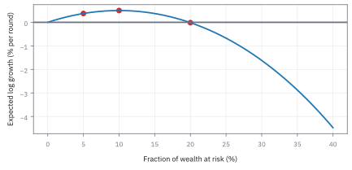
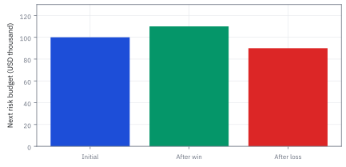

17.2 The Kelly Criterion
เงินทบต้นแบบคูณ ขนาดเดิมพันที่ดีที่สุดจึงเป็นขนาดที่ทำให้ค่าเฉลี่ยของ log สูงสุด และการลงเกินขนาดนั้นเสียมากกว่าการลงน้อยกว่า
ทุน \$1,000,000 เกมหนึ่งชนะ 55% แพ้ 45% จ่ายหนึ่งต่อหนึ่ง: เสี่ยง \$1 ชนะได้ \$1 แพ้เสีย \$1 เทรดเดอร์คนหนึ่งบอกว่า “ได้เปรียบอยู่แล้ว ยิ่งลงมากยิ่งได้มาก ลงรอบละ 20% ของทุนไปเลย” ควรเสี่ยงกี่เปอร์เซ็นต์ของทุนต่อรอบจึงจะโตเร็วที่สุดในระยะยาว และรอบละ 20% จะเป็นอย่างไร?
ลองตอบก่อนเปิดเฉลย
10% ของทุน ทุนโตแบบทบต้น 0.501% ต่อรอบ 100 รอบเป็น 1.65 เท่า ที่ 20% อัตราโตกลับติดลบ −0.014% ต่อรอบ เพราะเลยจุดศูนย์ที่ 19.87% ไปแล้ว ทั้งที่ทุกรอบยังได้เปรียบ 55 ต่อ 45 และถ้าลงรอบละ 40% ผ่านไป 100 รอบทุนเหลือ 1.13%
สิ่งที่เราจะสร้าง
17.1 วัดว่าพอร์ตอาจเสียเท่าไร หน้านี้ถามอีกด้าน: เมื่อรู้ว่าได้เปรียบ ควรเสี่ยงเท่าไร คำตอบไม่ได้มาจากกำไรเฉลี่ยต่อรอบ เพราะเงินไม่ได้บวกกันข้ามรอบ มันคูณกัน และ 1.10 เห็นแล้วว่า log เปลี่ยนการคูณเป็นการบวก
เริ่มจากคูณ 20 รอบด้วยมือ แล้วใส่ log ให้ law of large numbers (3.1) ทำงาน หาขนาดที่ดีที่สุดด้วย derivative ดูว่าครึ่งขนาดซื้ออะไรมา คิดให้ครบ 400 รอบแบบไม่ต้องสุ่ม ดูว่าทำไมค่าเฉลี่ยของเงินหลอกเรา ลองกรณีที่ประเมินโอกาสชนะสูงไป แล้วเขียนแบบต่อเนื่องด้วย Itô (13.2) จนได้ขนาดที่ขึ้นกับ Sharpe ratio (3.5)
ศัพท์ที่ใช้ในหัวข้อนี้
- Kelly criterion
- กฎเลือกสัดส่วนของทุนที่เสี่ยงต่อรอบ ให้ค่าเฉลี่ยของ log การเติบโตสูงสุด ใช้กำหนดขนาดสถานะเมื่อเอากำไรไปลงต่อเรื่อย ๆ
- อัตราโตแบบทบต้น (log growth)
- ค่าเฉลี่ยต่อรอบของ log ของตัวคูณทุน เป็นอัตราที่เส้นทางทั่วไปของทุนโตจริงในระยะยาว ไม่ใช่กำไรเฉลี่ยต่อรอบ
- Edge
- กำไรเฉลี่ยต่อเงินเสี่ยง \$1 ต่อรอบ คือ $pb-q$ ถ้าไม่เป็นบวก ขนาดที่ดีที่สุดคือไม่ลงเลย
- Fractional Kelly
- การลงเพียงสัดส่วนหนึ่งของขนาด Kelly เช่นครึ่งหนึ่ง ใช้ลดความผันผวนและกันความผิดพลาดของโอกาสชนะที่ประมาณมา
- Leverage
- การถือสินทรัพย์มากกว่าทุนตัวเองด้วยเงินกู้ ในแบบต่อเนื่อง Kelly มักสั่งให้ถือเกินทุน ซึ่งขยายทั้งกำไรและขาดทุน
- Volatility drag
- การที่ความผันผวนกินอัตราโตแบบทบต้น เช่น ขึ้น 10% แล้วลง 10% เหลือ 99% ใช้อธิบายว่าทำไมลงมากเกินแล้วโตช้าลง
สัญลักษณ์และหน่วย
| สัญลักษณ์ | ความหมาย | หน่วย |
|---|---|---|
| $W_0$ | ทุนเริ่มต้น | \$ |
| $W_n$ | ทุนหลัง $n$ รอบ | \$ |
| $f$ | สัดส่วนของทุนที่เสี่ยงต่อรอบ (เสียเท่านี้เมื่อแพ้) | สัดส่วน |
| $p$ | โอกาสชนะ | สัดส่วน |
| $q$ | โอกาสแพ้ $1-p$ | สัดส่วน |
| $b$ | กำไรเมื่อชนะต่อเงินเสี่ยง \$1 | เท่า |
| $n_+,\ n_-$ | จำนวนรอบที่ชนะ และที่แพ้ | รอบ |
| $g(f)$ | อัตราโตแบบทบต้นต่อรอบ | ต่อรอบ |
| $k$ | จำนวนครั้งที่ชนะใน 400 รอบ | ครั้ง |
| $a$ | สัดส่วนของทุนในสินทรัพย์เสี่ยง (แบบต่อเนื่อง) | เท่าของทุน |
| $\mu$ | ผลตอบแทนคาดหวังของสินทรัพย์เสี่ยง | ต่อปี |
| $r$ | ดอกเบี้ยเงินสด | ต่อปี |
| $\sigma$ | ความผันผวนของสินทรัพย์เสี่ยง | ต่อรากปี |
| $B_t$ | Brownian motion มาตรฐาน (9.2) | รากปี |
ขั้นที่ 1 — ลองด้วยมือ: 20 รอบ ชนะ 11 แพ้ 9 กับสี่ขนาด
ก่อนมี log และ derivative ลองคูณตรง ๆ ในเกม 55% รอบที่ “ปกติที่สุด” ของ 20 รอบคือชนะ 11 แพ้ 9 ชนะแต่ละรอบทุนคูณ $1+f$ แพ้คูณ $1-f$ ลำดับไม่สำคัญเพราะการคูณสลับที่ได้ ลองสี่ขนาดแล้วดูว่าไม้ใหญ่ให้เงินมากกว่าจริงไหม
เสี่ยง 5% ได้ +7.8% เสี่ยง 10% ได้ +10.5% แต่เสี่ยง 20% กลับขาดทุน 0.3% และเสี่ยงครึ่งทุนเหลือ 17% ของเงิน ทั้งที่ชนะมากกว่าแพ้สองรอบ เหตุคือแพ้ 50% ต้องชนะ 100% จึงกลับที่เดิม การคูณลงโทษการแกว่งแรงกว่าที่มันให้รางวัล
ขนาดที่ดีที่สุดอยู่แถว 10% ขั้นถัดไปจะหาด้วย calculus โดยใส่ log ให้บรรทัดแรก แล้วหารด้วยจำนวนรอบ
ขั้นที่ 2 — log เปลี่ยนผลคูณเป็นผลบวก
ทุนหลัง $n$ รอบเป็นผลคูณ ซึ่งวิเคราะห์ยาก ใส่ log แล้วมันกลายเป็นผลบวก และพอเป็นค่าเฉลี่ยของผลบวก law of large numbers ก็ใช้ได้ ให้แพ้แล้วเสีย $f$ ส่วนชนะแล้วได้ $bf$ เพื่อให้ใช้ได้กับอัตราจ่ายอื่นด้วย
เมื่อเล่นนาน สัดส่วนรอบที่ชนะเข้าใกล้ $p$ (3.1) ค่าเฉลี่ยต่อรอบของ log ทุนจึงนิ่งที่ $g(f)$ แปลว่าเส้นทางทั่วไปของทุนโตแบบทบต้นในอัตรา $g$ ต่อรอบ ตัวเลขนี้คือสิ่งที่ต้องทำให้สูงสุด ไม่ใช่กำไรเฉลี่ยต่อรอบ
เงื่อนไขเดียวคือทุนต้องเป็นบวกหลังทุกผลลัพธ์ จึงต้อง $f\lt1$ ถ้า $f=1$ แพ้รอบเดียวก็เหลือศูนย์ และ $\ln0$ เป็นลบอนันต์
ขั้นที่ 3 — หาจุดสูงสุด: $f^*=(pb-q)/b$
ตอนนี้ $g$ เป็นฟังก์ชันตัวแปรเดียวที่เรียบ หาจุดที่ความชันเป็นศูนย์ แล้วตรวจว่าเป็นยอด ไม่ใช่ก้นหลุม
คูณไขว้ได้บรรทัดที่สอง กระจายแล้วย้ายพจน์ที่มี $f$ ไปข้างเดียว เหลือ $bf(p+q)$ ซึ่งเท่ากับ $bf$ เพราะ $p+q=1$ ตัวเศษ $pb-q$ คือ edge: กำไรเฉลี่ยต่อเงินเสี่ยง \$1 หารด้วย $b$ เพราะเกมที่จ่ายมากต้องการเงินเสี่ยงน้อยกว่าเพื่อให้ได้ความผันผวนเท่าเดิม
$g''$ เป็นลบทุกจุด $g$ จึงโค้งคว่ำทั้งเส้น มียอดเดียว ถ้า edge ไม่เป็นบวก ยอดอยู่ที่ $f\le0$ คำตอบคือไม่ลง ทุน \$1,000,000 จึงเสี่ยง \$100,000 ในรอบแรก ตรงกับที่คูณด้วยมือในขั้นที่ 1
ขั้นที่ 4 — อัตราโตที่ห้าขนาด: ยอดที่ 10% หน้าผาเลย 20%
แทนค่า $g$ ที่ห้าขนาด แต่ละบรรทัดคือก้อนชนะถ่วงด้วย 0.55 ลบก้อนแพ้ถ่วงด้วย 0.45 เพื่อดูว่าเส้นโค้งหน้าตาอย่างไรรอบยอด
$\ln0.9=-0.10536$ ลึกกว่า $\ln1.1=0.09531$ ทั้งที่ขยับ 10% เท่ากัน ขาดทุน 10% เจ็บกว่ากำไร 10% เสมอเมื่อนับแบบทบต้น เพิ่มขนาด ก้อนแพ้จึงโตเร็วกว่าก้อนชนะ จนแซงที่ 19.87% (หาด้วย bisection) ที่ 20% หรือสองเท่าของ Kelly อัตราโตจึงติดลบแล้ว
ครึ่งขนาดให้ $0.0037526/0.0050084=0.749$ ของอัตราโตสูงสุด เกินยอดไปครึ่งหนึ่งที่ 15% ได้พอ ๆ กับ 5% แต่แกว่งแรงกว่ามาก เส้นไม่สมมาตร การลงน้อยไปจึงถูกกว่าการลงมากไป
100 รอบ: ขนาดเต็ม $e^{0.50084}=1.6501$ เท่า ครึ่งขนาด $e^{0.37526}=1.4554$ เท่า สี่เท่าของ Kelly $e^{-4.4812}=0.0113$ เหลือ 1.13% ถ้าเล่นวันละรอบ ปีหนึ่งมี 252 วันทำการ (1.1) ขนาดเต็มได้ $e^{252(0.0050084)}=e^{1.2621}=3.53$ เท่า
Figure 17.2a — ยอดอยู่ที่ 10% และหน้าผาอยู่เลย 20%

แกนนอนคือสัดส่วนของทุนที่เสี่ยง 0 ถึง 42% แกนตั้งคือ $g(f)$ เป็นเปอร์เซ็นต์ต่อรอบ ของเกม 55% จ่ายหนึ่งต่อหนึ่ง จุดแดงห้าจุดคือขนาด 5, 10, 15, 20 และ 40% ป้าย +0.375, +0.501, +0.374, −0.014 และ −4.481% ตามขั้นที่ 4 เส้นจุดแนวตั้งคือจุดศูนย์ที่ 19.87% เส้นลงทางขวาชันกว่าทางซ้าย
ขั้นที่ 5 — Kelly สั่งเป็นสัดส่วน ไม่ใช่จำนวนเงิน
สูตรให้สัดส่วน $f$ ของทุนปัจจุบัน ไม่ใช่เงินก้อนเดิมทุกรอบ ดูว่าหลังรอบแรกเงินเสี่ยงเปลี่ยนอย่างไร และทำไมสิ่งนี้กันไม่ให้ทุนถึงศูนย์
ชนะแล้วเสี่ยงเพิ่ม แพ้แล้วเสี่ยงลด ชนะหนึ่งแพ้หนึ่งไม่ว่าลำดับไหนเหลือ \$990,000 หาย 1% ทั้งที่ขึ้นลงเท่ากัน นี่คือ volatility drag ที่ขั้นที่ 4 เห็นเป็น $\ln0.9$ ลึกกว่า $\ln1.1$
บรรทัดสุดท้ายคือแพ้สิบรอบติด ซึ่งในเกม 45% มีโอกาส $0.45^{10}=0.034\%$ ถ้าเสี่ยงเป็นสัดส่วน ทุนเหลือ \$348,678 ถ้าเสี่ยง \$100,000 คงที่ทุกรอบ สิบรอบก็หมดเงินพอดี
Figure 17.2b — เห็นเส้นทางที่ใช้ผลชนะชุดเดียวกัน

ผลชนะแพ้ 200 รอบสุ่มครั้งเดียว (seed 172 โอกาสชนะ 55%) แล้วใช้ชุดเดียวกันกับสองขนาด เส้นเขียวคือเสี่ยง 5% เส้นน้ำเงินคือ 10% แกนตั้งคือทุนเป็นล้านดอลลาร์ เริ่มที่ 1 เพราะผลชนะแพ้เหมือนกัน ความต่างทั้งหมดมาจากขนาด เส้น 10% ขึ้นแรงกว่าในช่วงดีและลงแรงกว่าในช่วงแพ้ติดกัน เส้นทางนี้เป็นเพียงหนึ่งตัวอย่าง ขั้นที่ 6 คิดทุกเส้นทางพร้อมกัน
Figure 17.2c — เงินเสี่ยงต้องเปลี่ยนตามทุน

แกนตั้งคือเงินเสี่ยงของรอบถัดไป หน่วยพันดอลลาร์ ก่อนรอบแรก 100 หลังชนะ 110 หลังแพ้ 90 ตามสองบรรทัดแรกของขั้นที่ 5
ขั้นที่ 6 — ครึ่งขนาดซื้ออะไรมา: คิดครบ 400 รอบโดยไม่ต้องสุ่ม
ขั้นที่ 4 บอกว่าครึ่งขนาดได้อัตราโต 75% ของขนาดเต็ม อีกฝั่งของการแลกคืออะไร? ใน 400 รอบ ทุนตอนจบขึ้นกับจำนวนครั้งที่ชนะ $k$ อย่างเดียว และ $k$ เป็น Binomial(400, 0.55) ของ 1.5 จึงหาเส้นทางตรงกลางและเส้นทางที่เปอร์เซ็นไทล์ 5 ได้ตรง ๆ
median ของ $k$ คือ 220 เพราะ $P(k\le220)$ ข้าม 0.5 ตรงนั้น และเปอร์เซ็นไทล์ 5 คือ 204 ทุนเป็นฟังก์ชันเพิ่มของ $k$ เส้นทางตรงกลางจึงจบที่ 7.41 เท่าสำหรับขนาดเต็ม และ 4.49 เท่าสำหรับครึ่งขนาด ขนาดเต็มชนะในกรณีปกติ ซึ่งเป็นเหตุที่มันดูน่าลอง
แต่ที่เปอร์เซ็นไทล์ 5 ขนาดเต็มเหลือ 0.299 เท่า คือเสีย 70% ขณะที่ครึ่งขนาดยังเหลือ 0.905 เท่า เส้นทางเดียวกันทุกประการ (ชนะ 204 จาก 400) ต่างกันแค่ขนาดที่เลือก
คำถามว่า “ระหว่างทางทุนเคยลงไปถึงครึ่งหนึ่งไหม” ขึ้นกับลำดับ จึงต้องนับทีละรอบ: เก็บโอกาสของแต่ละจำนวนชนะ เมื่อทุนถึงครึ่งก็ย้ายโอกาสนั้นออกไปนับ โค้ดข้างล่างทำครบ 400 รอบได้ 0.436 สำหรับขนาดเต็ม และ 0.104 สำหรับครึ่งขนาด ครึ่งขนาดเสียอัตราโตหนึ่งในสี่ แต่ลดโอกาสเจ็บหนักระหว่างทางเหลือราวหนึ่งในสี่
ขั้นที่ 7 — ทำไมเฉลี่ย log ไม่ใช่เฉลี่ยเงิน
ถ้าอยากได้เงินมากที่สุด ทำไมไม่ทำให้ค่าเฉลี่ยของทุนตอนจบสูงสุด? ลองดู ค่าเฉลี่ยของตัวคูณหนึ่งรอบคือ $1+f(p-q)$ รอบเป็นอิสระกัน ค่าเฉลี่ยของผลคูณจึงเป็นผลคูณของค่าเฉลี่ย
ค่าเฉลี่ยของทุนเพิ่มตาม $f$ ตลอด จึงสั่งให้ลงทั้งหมดทุกรอบ ค่าเฉลี่ยนั้นสูงจริง แต่มาจากเส้นทางเดียวที่ชนะครบ 400 รอบ ซึ่งมีโอกาส $10^{-104}$ เส้นทางอื่นทั้งหมดจบที่ศูนย์ ค่าเฉลี่ยตอบคำถามว่า “ถ้ามีจักรวาลคู่ขนานนับไม่ถ้วน โดยเฉลี่ยได้เท่าไร” แต่เรามีเส้นทางเดียว
แม้ที่ขนาด Kelly ค่าเฉลี่ย 53.52 เท่าก็สูงกว่าเส้นทางตรงกลาง 7.41 เท่าถึงเจ็ดเท่า ค่าเฉลี่ยถูกยกด้วยเส้นทางโชคดีไม่กี่เส้น log ไม่ใช่รสนิยม แต่เป็นสิ่งที่ law of large numbers บอกว่าเส้นทางทั่วไปจะได้
ขั้นที่ 8 — ถ้าโอกาสชนะจริงคือ 52% ไม่ใช่ 55%
โอกาสชนะไม่ได้มาจากฟ้า มันประมาณจากข้อมูลย้อนหลัง และ 3.3 แสดงว่าค่าเฉลี่ยที่ประมาณคลาดได้ง่าย สมมติเราเชื่อ 55% จึงลง 10% แต่ความจริงคือ 52% ที่อัตราจ่ายหนึ่งต่อหนึ่ง $f^*=p-q=2p-1$
โอกาสชนะคลาดไป 3 จุด ขนาดที่ใช้กลายเป็น 2.5 เท่าของขนาดที่ถูก ซึ่งเลยจุดศูนย์ของเกม 52% (7.99%) ไปแล้ว ทุนหดรอบละ 0.101% ทั้งที่ยังได้เปรียบทุกรอบ
ครึ่งขนาดของความเชื่อ (5%) ยังโตรอบละ 0.075% หรือ 94% ของอัตราโตสูงสุดที่ทำได้จริง ครึ่ง Kelly จึงไม่ใช่ความขี้กลัว แต่เป็นประกันของความไม่รู้: ถ้า edge ที่ประมาณสูงไปเท่าตัว ครึ่ง Kelly ของความเชื่อก็คือ Kelly เต็มของความจริงพอดี
Figure 17.2d — ประมาณโอกาสชนะเกินไปสามจุด

แกนนอนคือสัดส่วนที่เสี่ยง 0 ถึง 20% แกนตั้งคืออัตราโตต่อรอบเป็นเปอร์เซ็นต์ เส้นแดงคือเกมที่โอกาสชนะจริง 52% (ยอดที่ 4%) เส้นน้ำเงินคือ 55% (ยอดที่ 10%) เส้นจุดคือขนาด 10% ที่เลือกจากความเชื่อ จุดแดงคืออัตราโตจริง −0.101% ต่อรอบ อยู่ใต้เส้นศูนย์
Figure 17.2e — ความได้เปรียบเล็กน้อยสร้างขนาดที่เปราะบาง

แกนนอนคือโอกาสชนะ 45 ถึง 65% ที่อัตราจ่ายหนึ่งต่อหนึ่ง แกนตั้งคือขนาด Kelly $2p-1$ (ศูนย์เมื่อไม่ได้เปรียบ เส้นประที่ 50%) จุดแดงคือ 52% ได้ 4% จุดส้มคือ 55% ได้ 10% ความต่างสามจุดของโอกาสชนะกลายเป็นขนาดต่างกัน 2.5 เท่า เพราะขนาดขึ้นกับ edge ไม่ใช่ตัวโอกาสชนะ
ขั้นที่ 9 — แบบต่อเนื่อง: log ให้พจน์ลบครึ่งมาเอง
ในตลาดจริงไม่ได้เดิมพันเป็นรอบ แต่ถือสัดส่วน $a$ ของทุนในสินทรัพย์เสี่ยงต่อเนื่อง ที่เหลือฝากที่ดอกเบี้ย $r$ บรรทัดแรกคือแบบจำลองที่เลือก (นิยาม) สิ่งที่ต้องการคืออัตราโตของ $\ln W$ ซึ่ง Itô (13.2) ให้ได้
บรรทัดที่สองคือ Itô กับ $\ln W$: derivative แรก $1/W$ ส่วนที่สอง $-1/W^2$ พจน์ลำดับสองจึงติดลบเพราะ log โค้งคว่ำ บรรทัดที่สามใช้ $(dB_t)^2=dt$ และ $dt^2$ กับ $dt\,dB_t$ เล็กจนทิ้งได้
พจน์ $-\tfrac12a^2\sigma^2$ คือ volatility drag ตัวเดียวกับ $1.1\times0.9=0.99$ ในขั้นที่ 5 กำไรโตเป็นเส้นตรงตาม $a$ แต่ราคาของความผันผวนโตตาม $a^2$ จึงต้องมีจุดที่การเพิ่มขนาดเริ่มทำร้ายตัวเอง
ขั้นที่ 10 — หุ้น 9% ความผันผวน 18% เงินฝาก 2%: ถือกี่เท่าของทุน
โจทย์ให้อะไรมาบ้าง: $\mu=9\%$ $\sigma=18\%$ $r=2\%$ ต่อปี และ $g(a)$ ของขั้นที่ 9 ซึ่งเป็นพาราโบลาคว่ำ หายอดด้วย derivative ตัวเดียว ส่วนเกินต่อความผันผวน $(\mu-r)/\sigma$ คือ Sharpe ratio (SR) ของ 3.5
คำตอบ: ขนาดเต็มคือถือหุ้น 216% ของทุน กู้อีก 116% โต 9.56% ต่อปี ความผันผวนของพอร์ต $2.1605(18\%)=38.89\%$ เท่ากับ SR พอดี เพราะ $a^*\sigma=(\mu-r)/\sigma$ อัตราโตสูงสุดเหนือเงินฝากคือ $\mathrm{SR}^2/2$ ขึ้นกับ SR อย่างเดียว
บรรทัด $\lambda$ ได้จากแทน $a=\lambda a^*$ ลงใน $g$: ครึ่งขนาด ($\lambda=\tfrac12$) ได้ $\tfrac34$ ของส่วนเกิน คือ 7.67% ที่ความผันผวน 19.44% ตัวเลขสามในสี่นี้ไม่ขึ้นกับ $\mu$, $r$ หรือ $\sigma$ ตรงกับ 0.749 ของเกมในขั้นที่ 4 และสองเท่า ($\lambda=2$) โตเท่าเงินฝากพอดี ทั้งที่แบกความผันผวน 77.8%
ถ้าผลตอบแทนคาดหวังจริงคือ 6% ไม่ใช่ 9% ขนาดที่ถูกคือ $0.04/0.0324=1.2346$ การถือ 2.16 เท่าจึงเป็น 1.75 เท่าของ Kelly จริง ได้อัตราโต 3.08% แทนที่จะได้ 4.47% ข้ามยอดไปแล้วโดยไม่รู้ตัว เหมือนขั้นที่ 8
ตรวจเองใน 10 วินาที: $0.07/0.18=0.389$ ยกกำลังสองได้ 0.151 ครึ่งหนึ่งคือ 0.0756 บวกเงินฝาก 0.02 ได้ 9.56%
คำถามที่ควรถามออกมาดัง ๆ
ถ้า Kelly โตเร็วที่สุด ทำไมกองทุนจริงลงน้อยกว่า? สองเหตุผลที่เห็นบนหน้านี้: โอกาสชนะที่ประมาณคลาด 3 จุดก็พาข้ามยอด (ขั้นที่ 8) และแม้รู้ค่าจริง ขนาดเต็มมีโอกาส 43.6% ที่ทุนจะลงไปครึ่งหนึ่งภายใน 400 รอบ นักลงทุนส่วนใหญ่ถอนเงินก่อนถึงตรงนั้น
ถ้ามีหลายสินทรัพย์ล่ะ? เขียน $g(a)=r+a^{\mathsf T}(\mu-r\mathbf 1)-\tfrac12a^{\mathsf T}\Sigma a$ ตั้ง gradient เป็นศูนย์ (12.2) ได้ $a^*=\Sigma^{-1}(\mu-r\mathbf 1)$ ทิศเดียวกับพอร์ต tangency ของ Markowitz ใน 17.3 Kelly บอกเพิ่มแค่ว่าควรใช้ leverage เท่าไร
เสี่ยงศูนย์ไม่ปลอดภัยที่สุดหรือ? ปลอดภัย แต่โตเท่าเงินฝาก (ในเกมคือไม่โตเลย) ทุกขนาดระหว่าง 0 ถึงราว $2f^*$ โตเร็วกว่านั้น ในแบบต่อเนื่องจุดศูนย์อยู่ที่ $2a^*$ พอดี ในเกมเป็นรอบอยู่ที่ 19.87% ใกล้ $2f^*=20\%$
ความผิดที่ให้คำตอบผิดแบบเงียบ ๆ
อ่าน $f^*$ เป็นมูลค่าที่ซื้อ: $f^*$ คือเงินที่จะหายเมื่อแพ้ ถ้าตั้ง stop-loss ห่าง 5% ของราคา เงินเสี่ยง 10% ของทุนแปลว่าซื้อของ $10\%/5\%=200\%$ ของทุน คนที่ซื้อแค่ 10% ของทุนเล่นเล็กกว่าที่ตั้งใจ 20 เท่า และคนที่ใช้กับ leverage ที่มีอยู่แล้วจะใหญ่เกินหลายเท่า
ใช้ Kelly แยกทีละกลยุทธ์: สองกลยุทธ์ที่เคลื่อนไหวเหมือนกันทุกประการ ต่างคนต่างลงขนาดเต็ม รวมกันคือสองเท่าของ Kelly ซึ่งขั้นที่ 10 แสดงว่าโตแค่เท่าเงินฝาก ต้องคิดจากพอร์ตรวมพร้อม covariance
เสี่ยงเป็นเงินคงที่: \$100,000 ทุกรอบ แพ้สิบรอบติดก็หมดทุน (โอกาส 0.034% ต่อช่วงสิบรอบ ไม่ใช่ศูนย์) เสี่ยงเป็นสัดส่วนยังเหลือ \$348,678
ใช้ Kelly ในวันที่ราคากระโดด: สูตรสมมติว่าขาดทุนหยุดที่ $f$ พอดี ถ้าราคาเปิดกระโดดข้าม stop-loss ขาดทุนจริงเกิน $f$ และแบบต่อเนื่องสมมติว่าปรับขนาดได้ตลอด ซึ่งวันที่ตลาดแย่ที่สุดทำไม่ได้ทั้งสองข้อ
ใช้ทำอะไรบนโต๊ะจริง
desk ใช้ Kelly เป็นเพดาน ไม่ใช่เป้าหมาย: คำนวณ $a^*$ จาก Sharpe ที่ประมาณได้ แล้วลงครึ่งหนึ่งหรือน้อยกว่า และลดขนาดเมื่อทุนลด (ขั้นที่ 5) ความจริงที่ว่าความผันผวนของพอร์ต Kelly เท่ากับ Sharpe ratio ใช้ตรวจเร็ว ๆ ว่าพอร์ตที่เสนอมาใหญ่เกินไหม ส่วนกฎลดขนาดเมื่อทุนตกจะกลับมาใน 17.6
สามโจทย์ตรวจความเข้าใจ
1. เกมจ่ายสองต่อหนึ่ง ($b=2$) โอกาสชนะ 40% ควรเสี่ยงกี่เปอร์เซ็นต์ และอัตราโตต่อรอบเท่าไร?
เฉลย
$f^*=(0.4\times2-0.6)/2=0.10$ อัตราโต $g=0.4\ln1.2+0.6\ln0.9=0.0729286-0.0632163=0.0097123$ หรือ 0.971% ต่อรอบ โอกาสชนะต่ำกว่าครึ่งแต่ยังได้เปรียบ เพราะ edge $0.8-0.6=0.2$ ต่อ \$1 ที่เสี่ยง
2. สินทรัพย์ $\mu=7\%$ $\sigma=20\%$ เงินฝาก $r=3\%$ หา $a^*$ อัตราโตที่ยอด และอัตราโตที่ครึ่งขนาด
เฉลย
$a^*=0.04/0.04=1.0$ ถือเต็มทุนไม่กู้ SR $=0.2$ อัตราโต $0.03+0.2^2/2=5\%$ ครึ่งขนาด $0.03+0.5(0.04)-\tfrac12(0.25)(0.04)=4.5\%$ ได้ส่วนเกิน 1.5 จาก 2 จุด คือสามในสี่ ความผันผวนของพอร์ตเต็มคือ 20% เท่ากับ SR ตามที่ควร
3. ทุน \$2 ล้าน กลยุทธ์ชนะ 55% ตั้งเป้ากำไรเท่ากับระยะ stop-loss 4% ของราคา Kelly สั่งให้ซื้อหุ้นมูลค่าเท่าไร?
เฉลย
จ่ายหนึ่งต่อหนึ่ง $f^*=0.10$ เงินที่จะหายเมื่อแพ้คือ \$200,000 เท่ากับ 4% ของมูลค่าที่ซื้อ จึงซื้อ $200{,}000/0.04=\$5$ ล้าน หรือ 2.5 เท่าของทุน ครึ่ง Kelly คือ \$2.5 ล้าน
คำนวณซ้ำด้วย JavaScript
โค้ดนี้คิดอัตราโตแบบทบต้นของเกม ขนาด Kelly จุดที่อัตราโตเป็นศูนย์ สถิติครบ 400 รอบจาก Binomial รวมโอกาสที่ทุนเคยลงถึงครึ่ง (นับทีละรอบ ไม่สุ่ม) และแบบต่อเนื่องของหุ้น 9% แล้วพิมพ์ตัวเลขหลักของหน้าออกมาหนึ่งบรรทัด
function num(name, x) {
if (typeof x !== 'number' || !Number.isFinite(x)) throw new TypeError(`${name} must be a finite number`);
return x;
}
function prob(p) {
if (!(num('p', p) > 0 && p < 1)) throw new RangeError('p must be strictly between 0 and 1');
return p;
}
// Log growth per round: win b per 1 at risk with probability p, lose the stake otherwise.
function growth(f, p, b = 1) {
if (!(num('f', f) >= 0 && f < 1)) throw new RangeError('f must be in [0, 1): betting it all risks ruin');
if (!(num('b', b) > 0)) throw new RangeError('b must be positive');
return prob(p) * Math.log1p(b * f) + (1 - p) * Math.log1p(-f);
}
// g'(f) = pb/(1+bf) - q/(1-f) = 0 gives f* = (pb - q)/b; no edge means no bet.
const kelly = (p, b = 1) => Math.max(0, (prob(p) * num('b', b) - (1 - p)) / b);
// Where growth crosses zero above f*, by bisection.
function zeroGrowth(p, b = 1) {
let lo = kelly(p, b), hi = 1 - 1e-12;
if (lo === 0) throw new RangeError('no positive edge: growth is never positive');
for (let i = 0; i < 200; i++) { const mid = (lo + hi) / 2; if (growth(mid, p, b) > 0) lo = mid; else hi = mid; }
return lo;
}
// Exact n-round statistics of the 1:1 game: final wealth depends only on the number of wins k.
function pathStats(f, p, n) {
growth(f, p);
if (!Number.isInteger(n) || n < 1) throw new RangeError('n must be a positive integer');
const pmf = [(1 - p) ** n];
for (let k = 1; k <= n; k++) pmf.push(pmf[k - 1] * (n - k + 1) / k * p / (1 - p));
const wealth = k => Math.exp(k * Math.log1p(f) + (n - k) * Math.log1p(-f));
const quantileK = u => { let c = 0; for (let k = 0; k <= n; k++) { c += pmf[k]; if (c >= u) return k; } return n; };
// Probability that wealth ever falls to half its start: carry the surviving mass round by round.
let alive = [1], everHalf = 0;
for (let i = 1; i <= n; i++) {
const next = new Array(i + 1).fill(0);
alive.forEach((m, k) => { next[k + 1] += m * p; next[k] += m * (1 - p); });
next.forEach((m, k) => { if (m && k * Math.log1p(f) + (i - k) * Math.log1p(-f) <= Math.log(0.5)) { everHalf += m; next[k] = 0; } });
alive = next;
}
const kMed = quantileK(0.5), k5 = quantileK(0.05);
return {kMed, k5, median: wealth(kMed), p5: wealth(k5), mean: (1 + f * (2 * p - 1)) ** n, everHalf};
}
// Continuous version: a in the risky asset, the rest in cash; g(a) = r + a(mu - r) - a^2 sigma^2 / 2.
function continuous(mu, r, sigma, a) {
if (!(num('sigma', sigma) > 0)) throw new RangeError('sigma must be positive');
return num('r', r) + num('a', a) * (num('mu', mu) - r) - 0.5 * a * a * sigma * sigma;
}
const aStar = (mu, r, sigma) => (num('mu', mu) - num('r', r)) / num('sigma', sigma) ** 2;
const sizes = [0.05, 0.10, 0.15, 0.20, 0.40];
const full = pathStats(0.10, 0.55, 400), half = pathStats(0.05, 0.55, 400);
const a = aStar(0.09, 0.02, 0.18);
console.log(JSON.stringify({
twenty: [0.05, 0.10, 0.20, 0.50].map(f => (1 + f) ** 11 * (1 - f) ** 9),
fStar: kelly(0.55), riskFirstRound: kelly(0.55) * 1e6,
g: sizes.map(f => growth(f, 0.55)), zero55: zeroGrowth(0.55),
hundred: {full: Math.exp(100 * growth(0.10, 0.55)), half: Math.exp(100 * growth(0.05, 0.55)), fourTimes: Math.exp(100 * growth(0.40, 0.55))},
year252: Math.exp(252 * growth(0.10, 0.55)), halfShare: growth(0.05, 0.55) / growth(0.10, 0.55),
budget: [1e6 * 0.10, 1.1e6 * 0.10, 0.9e6 * 0.10],
full, half, allIn: {log10Mean: 400 * Math.log10(1.1), log10Survive: 400 * Math.log10(0.55)},
wrongP: {fTrue: kelly(0.52), atTen: growth(0.10, 0.52), atHalf: growth(0.05, 0.52), zero52: zeroGrowth(0.52)},
cont: {aStar: a, g: continuous(0.09, 0.02, 0.18, a), vol: a * 0.18, halfG: continuous(0.09, 0.02, 0.18, a / 2),
doubleG: continuous(0.09, 0.02, 0.18, 2 * a), aTrue6: aStar(0.06, 0.02, 0.18), gIf6: continuous(0.06, 0.02, 0.18, a),
bestIf6: continuous(0.06, 0.02, 0.18, aStar(0.06, 0.02, 0.18))}
}));ที่มาที่ไป
John Kelly เขียนสูตรนี้ที่ Bell Labs ในปี 1956 ในบทความเรื่องอัตราข้อมูลของสายสื่อสาร เขาถามว่าถ้าได้ข่าวลับผ่านสายที่มีสัญญาณรบกวน ควรเดิมพันเท่าไร Edward Thorp เอาไปใช้กับการนับไพ่ blackjack ในทศวรรษ 1960 แล้วต่อมากับการลงทุน และ Leo Breiman พิสูจน์ในปี 1961 ว่ากลยุทธ์นี้ทำให้ทุนโตเร็วที่สุดในระยะยาว
ข้อจำกัด: วิธีนี้สมมติอะไร และของจริงเป็นอย่างไร
| สมมติอะไร | ของจริง | ผลเวลาใช้งาน |
|---|---|---|
| รู้ $p$ หรือ $\mu$ ที่แท้จริง | ประมาณมาและมักสูงเกิน | คลาด 3 จุดก็ข้ามยอด ใช้ครึ่ง Kelly หรือน้อยกว่า |
| เล่นได้ไม่จำกัดรอบ | นักลงทุนถอนเงินหลังขาดทุนหนัก | โอกาส 43.6% ที่ทุนลงครึ่งหนึ่งทนไม่ไหวในทางปฏิบัติ |
| ขาดทุนหยุดที่ $f$ และปรับขนาดได้ตลอด | ราคากระโดดข้าม stop-loss | ขาดทุนจริงเกินแผน โดยเฉพาะเมื่อใช้ leverage |
| คิดทีละเดิมพัน | หลายกลยุทธ์ชนะแพ้พร้อมกัน | ต้องใช้ covariance ของพอร์ตรวม (17.3) |
สิ่งที่ควรตอบได้หลังอ่าน
- เงินคูณกันข้ามรอบ log เปลี่ยนเป็นผลบวก และ law of large numbers ให้อัตราโตของเส้นทางทั่วไป $g(f)=p\ln(1+bf)+q\ln(1-f)$
- เกม 55% จ่ายหนึ่งต่อหนึ่ง: $f^*=10\%$ โต 0.501% ต่อรอบ จุดศูนย์ที่ 19.87% และ 40% เหลือ 1.13% ใน 100 รอบ
- ครึ่ง Kelly ได้อัตราโตสามในสี่ แต่ใน 400 รอบลดโอกาสที่ทุนลงถึงครึ่งจาก 0.436 เป็น 0.104 และยกเปอร์เซ็นไทล์ 5 จาก 0.299 เป็น 0.905
- ค่าเฉลี่ยของเงินสั่งให้ลงทั้งหมด และถูกยกด้วยเส้นทางที่แทบไม่เกิด log ตอบคำถามที่ถูก
- แบบต่อเนื่อง $a^*=(\mu-r)/\sigma^2$ ให้ความผันผวนเท่ากับ Sharpe ratio และโตเหนือเงินฝาก $\mathrm{SR}^2/2$ สองเท่าของ Kelly โตเท่าเงินฝาก
17.3 ขยายจากเดิมพันเดียวเป็นหลายสินทรัพย์ที่ขึ้นลงร่วมกัน: Markowitz หาน้ำหนักจาก covariance และทิศทางที่ได้คือทิศเดียวกับ $\Sigma^{-1}(\mu-r\mathbf 1)$ ในคำถามข้างบน